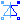

Modelica.Electrical.QuasiStationary.SinglePhase.Utilities.GraetzRectifier
Modelica.Electrical.QuasiStationary.SinglePhase.Utilities.GraetzRectifier
Library with auxiliary models for testing
This package hosts utilities for test examples of quasi stationary single phase circuits. Quasi stationary theory for single phase circuits can be found in the references.
Extends from Modelica.Icons.UtilitiesPackage (Icon for utility packages).
| Name | Description |
|---|---|
|  IdealACDCConverter | Ideal AC DC converter |
| GraetzRectifier | Graetz rectifier bridge |
Ideal AC DC converter
This is an ideal AC DC converter, based on a power balance between QS circuit and DC side. The parameter conversionFactor defines the ratio between averaged DC voltage and QS rms voltage. Furthermore, reactive power at the QS side is set to 0.
Of course no voltage or current ripple is present, neither at the QS side nor at the DC side. At the QS side, only base harmonics of voltage and current are taken into account. At the DC side, only the mean of voltage and current are taken into account.
| Name | Description |
|---|---|
| conversionFactor | Ratio of DC voltage / QS rms voltage |
| Name | Description |
|---|---|
| pin_pQS | |
| pin_nQS | |
| pin_pDC | |
| pin_nDC |
Modelica.Electrical.QuasiStationary.SinglePhase.Utilities.GraetzRectifierGraetz rectifier bridge
This is a so called Graetz-bridge, a single phase rectifier built from 4 diodes.
| Name | Description |
|---|---|
| pin_pAC | |
| pin_nAC | |
| pin_pDC | |
| pin_nDC |